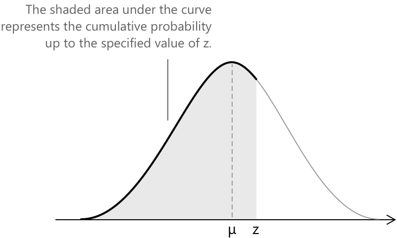
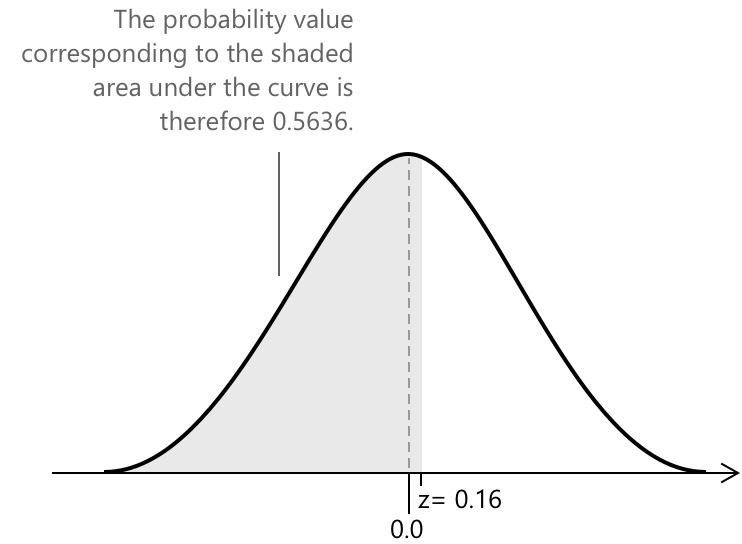
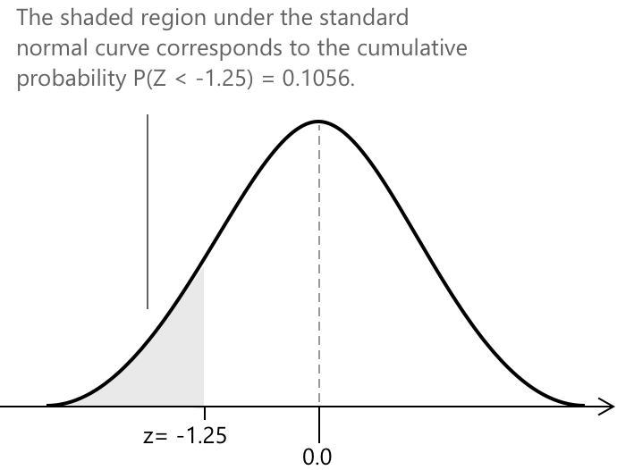

Таблиця стандартного нормального розподілу Z
Від нормального до стандартного нормального розподілу
Загальний нормальний розподіл \( \mathcal{N}(x; \mu, \sigma) \) завжди можна перетворити на його стандартизовану форму \( N(x; 0, 1) \), ввівши стандартну змінну \( Z \), яка визначається як
\[ Z = \frac{X - \mu}{\sigma} \]
Це перетворення, відоме як стандартизація, виражає кожне значення неперервної випадкової змінної \( X \) через кількість стандартних відхилень, на які воно віддалене від середнього значення \( \mu \). У результаті нова змінна \( Z \) має стандартний нормальний розподіл із середнім \( 0 \) та стандартним відхиленням \( 1 \).
Процес стандартизації є особливо корисним, оскільки він дозволяє привести різні нормальні розподіли до спільної шкали. Після того як змінна \( X \) була перетворена на стандартну змінну \( Z \), ймовірності та критичні значення можна знайти безпосередньо зі стандартного нормального розподілу \( N(x; 0, 1) \).
Це дозволяє розв'язувати статистичні задачі за допомогою однієї універсальної довідкової таблиці (Z-таблиці), що спрощує обчислення та порівняння в різних контекстах.
Стандартна Z-таблиця
Стандартна Z-таблиця містить для кожної комірки кумулятивну ймовірність ліворуч від заданого значення \(Z\). Іншими словами, вона показує ймовірність того, що стандартна нормальна змінна набуває значення, меншого або рівного заданому Z-показнику. Ці значення відповідають площі під кривою стандартного нормального розподілу від мінус нескінченності до обраної точки на горизонтальній осі, що позначається значенням \( z \).

Повна Z-таблиця є досить об’ємною, оскільки містить значення для широкого діапазону Z-показників. Для стислості нижче наведено лише частину таблиці як ілюстративний витяг.
| z | .00 | .01 | .02 | .03 | .04 | .05 | .06 | .07 | .08 | … |
|---|---|---|---|---|---|---|---|---|---|---|
| 0.0 | .5000 | .5040 | .5080 | .5120 | .5160 | .5199 | .5239 | .5279 | .5319 | … |
| 0.1 | .5398 | .5438 | .5478 | .5517 | .5557 | .5596 | .5636 | .5675 | .5714 | … |
| 0.2 | .5793 | .5832 | .5871 | .5910 | .5948 | .5987 | .6026 | .6064 | .6103 | … |
| 0.3 | .6179 | .6217 | .6255 | .6293 | .6331 | .6368 | .6406 | .6443 | .6480 | … |
| 0.4 | .6554 | .6591 | .6628 | .6664 | .6700 | .6736 | .6772 | .6808 | .6844 | … |
| 0.5 | .6915 | .6950 | .6985 | .7019 | .7054 | .7088 | .7123 | .7157 | .7190 | … |
| 0.6 | .7257 | .7291 | .7324 | .7357 | .7389 | .7422 | .7454 | .7486 | .7517 | … |
| 0.7 | .7580 | .7611 | .7642 | .7673 | .7704 | .7734 | .7764 | .7794 | .7823 | … |
| 0.8 | .7881 | .7910 | .7939 | .7967 | .7995 | .8023 | .8051 | .8078 | .8106 | … |
| 0.9 | .8159 | .8186 | .8212 | .8238 | .8264 | .8289 | .8315 | .8340 | .8365 | … |
| 1.0 | .8413 | .8438 | .8461 | .8485 | .8508 | .8531 | .8554 | .8577 | .8599 | … |
| … | … | … | … | … | … | … | … | … | … | … |
Кілька онлайн-ресурсів, як статичних, так і інтерактивних, дозволяють користувачам обчислювати кумулятивні ймовірності для різних значень \( z \).
Користуватися Z-таблицею досить просто.
- Рядок, що відповідає значенню \(Z\), містить цілу частину та перший знак після коми
- Стовпець представляє решту десяткових знаків, починаючи з другого.
- Комірка на перетині обраного рядка та стовпця дає кумулятивну ймовірність до заданого значення \( z \).
Приклад 1
Розглянемо простий приклад, щоб проілюструвати, як використовується Z-таблиця для визначення кумулятивної ймовірності, що відповідає заданому значенню стандартизованої змінної \( Z \). Розглянемо випадок стандартизованої змінної \( Z \), такої що:
\[z = 0.16\]
Щоб знайти кумулятивну ймовірність ліворуч від стандартизованої змінної \( z \), ми знаходимо значення 0.1 у рядку та 0.06 у стовпці Z-таблиці. Перетин цих двох значень дає відповідне значення ймовірності, яке в цьому випадку становить \( 0.5636 \).
| z | .00 | .01 | .02 | .03 | .04 | .05 | .06 | .07 | .08 | … |
|---|---|---|---|---|---|---|---|---|---|---|
| 0.0 | .5000 | .5040 | .5080 | .5120 | .5160 | .5199 | .5239 | .5279 | .5319 | … |
| 0.1 | .5398 | .5438 | .5478 | .5517 | .5557 | .5596 | .5636 | .5675 | .5714 | … |
| … | … | … | … | … | … | … | … | … | … | … |
Це означає, що приблизно 56.36% спостережень у стандартному нормальному розподілі лежать нижче цього значення \( z \). Отже, ми можемо стверджувати, що ймовірність того, що стандартизована змінна \( Z \) буде меншою за \( z = 0.16 \), дорівнює \( 0.5636 \), тобто:
\[ P(Z < 0.16) = 0.5636 \]

Оскільки загальна площа під стандартною нормальною кривою дорівнює \(1\), а розподіл є симетричним відносно свого середнього значення, ми можемо відразу вивести, що
\[ P(Z > 0.16) = 1 – 0.5636 \]
Крім того, ймовірність того, що \( Z \) лежить між \(0\) та \(0.16\), отримують шляхом віднімання кумулятивної ймовірності до \( Z = 0 \) від ймовірності до \( Z = 0.16 \):
\[ P(0 < Z < 0.16) = P(Z < 0.16) – P(Z < 0) \]
Підставляючи відповідні значення, отримаємо
\[ P(0 < Z < 0.16) = 0.5636 – 0.5 = 0.0636 \]
Нарешті, через симетрію нормального розподілу відносно його середнього значення, ймовірність того, що \( Z \) лежить у проміжку \( -0.16 < Z < 0.16 \), у двічі більша за ймовірність бути між \(0\) та \(0.16\):
\[ P(-0.16 < Z < 0.16) = 2 \times P(0 < Z < 0.16) = 0.1272 \]
Приклад 2
Припустимо, що середній термін служби акумулятора становить \( \mu = 8.0 \) годин, зі стандартним відхиленням \( \sigma = 1.2 \) години, і що термін служби акумулятора має нормальний розподіл. Ми хочемо обчислити ймовірність того, що випадково обраний акумулятор прослужить менше \( 6.5 \) годин.
Щоб знайти ймовірність \( P(X < 6.5) \), нам потрібно визначити площу під кривою нормального розподілу ліворуч від \( 6.5 \). Для цього ми застосовуємо формулу стандартизації:
\[ z = \frac{x – \mu}{\sigma} \]
де \( x \) представляє спостережуне значення випадкової змінної, яке в цьому випадку відповідає 6.5 годинам. Маємо:
\[ z = \frac{6.5 - 8.0}{1.2} = \frac{-1.5}{1.2} = -1.25 \]
Далі ми можемо скористатися Z-таблицею, щоб знайти \( P(Z < -1.25) \), що дає кумулятивну ймовірність, пов'язану з цим значенням \( z \).
| z | .00 | .01 | .02 | .03 | .04 | .05 | .06 | .07 | .08 | … |
|---|---|---|---|---|---|---|---|---|---|---|
| -1.0 | .1587 | .1562 | .1539 | .1515 | .1492 | .1469 | .1446 | .1423 | .1401 | … |
| -1.2 | .1151 | .1131 | .1112 | .1093 | .1075 | .1056 | .1038 | .1020 | .1003 | … |
| -1.3 | .0968 | .0951 | .0934 | .0918 | .0901 | .0885 | .0869 | .0853 | .0838 | … |
| … | … | … | … | … | … | … | … | … | … | … |
З перетину обраного рядка та стовпця ми отримаємо значення ймовірності, що дорівнює \( 0.1056 \). Рисунок нижче ілюструє, де ця ймовірність розташована під стандартною кривою нормального розподілу, що відповідає кумулятивній площі ліворуч від \( z = -1.25 \).

З таблиці стандартного нормального розподілу отримуємо
\[ P(Z < -1.25) = 0.1056 \]